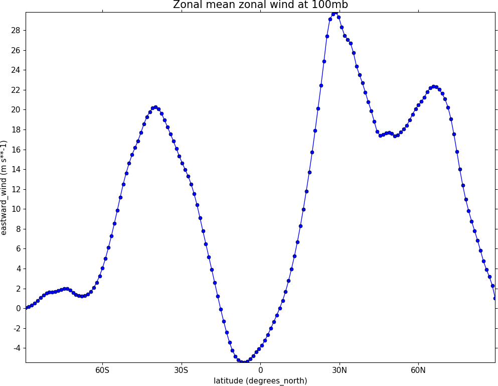
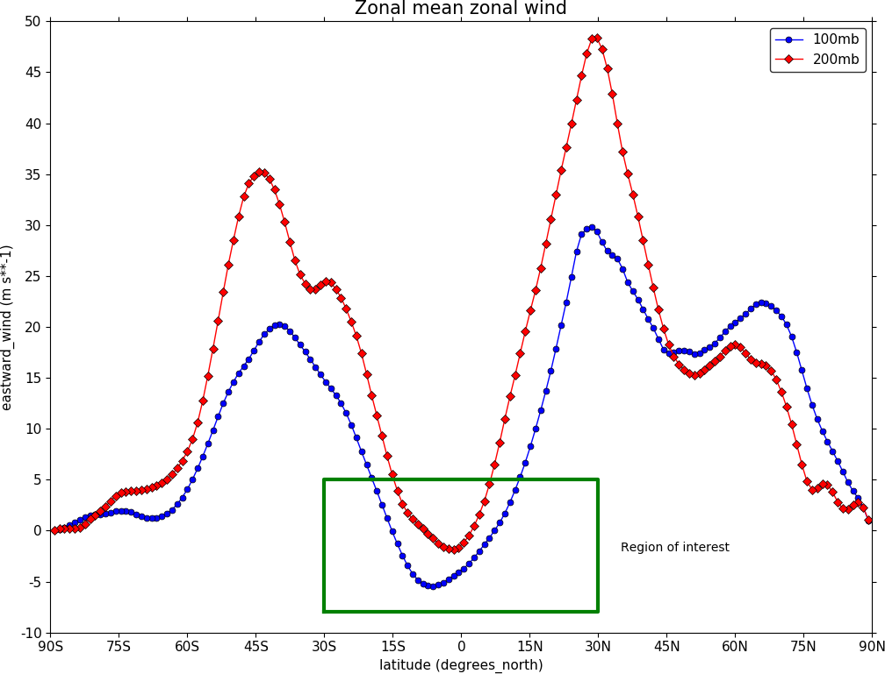
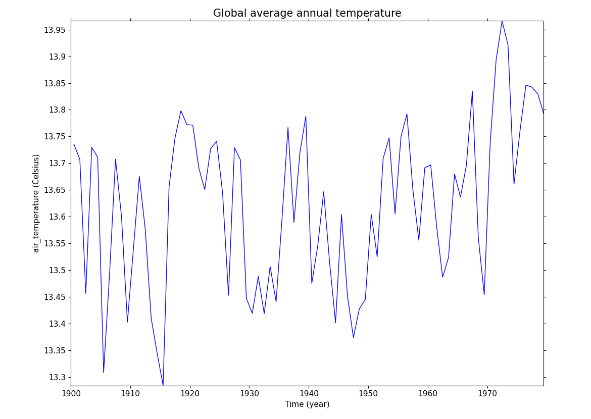
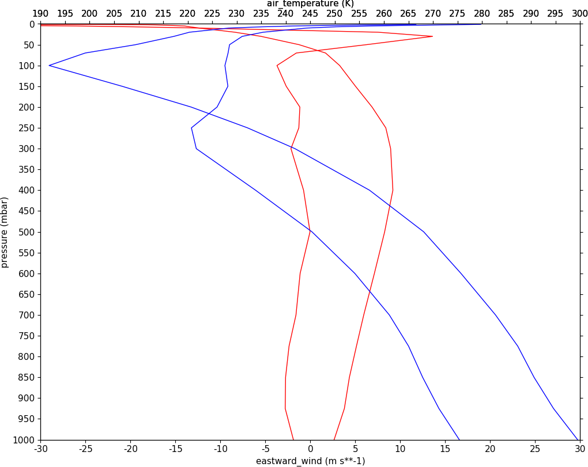

Graphs¶
Example 27 - graph plot¶
{kind=link}
import cf
import cfplot as cfp
f=cf.read('cfplot_data/ggap.nc')[1]
g=f.collapse('X: mean')
cfp.lineplot(g.subspace(pressure=100), marker='o', color='blue',\
title='Zonal mean zonal wind at 100mb')
Other valid markers are:
Example 28 - Line and legend plot¶
{kind=link}
import cf
import cfplot as cfp
f=cf.read('cfplot_data/ggap.nc')[1]
g=f.collapse('X: mean')
xticks=[-90,-75,-60,-45,-30,-15,0,15,30,45,60,75,90]
xticklabels=['90S','75S','60S','45S','30S','15S','0','15N','30N','45N','60N','75N','90N']
xpts=[-30, 30, 30, -30, -30]
ypts=[-8, -8, 5, 5, -8]
cfp.gset(xmin=-90, xmax=90, ymin=-10, ymax=50)
cfp.gopen()
cfp.lineplot(g.subspace(pressure=100), marker='o', color='blue',\
title='Zonal mean zonal wind', label='100mb')
cfp.lineplot(g.subspace(pressure=200), marker='D', color='red',\
label='200mb', xticks=xticks, xticklabels=xticklabels,\
legend_location='upper right')
cfp.plotvars.plot.plot(xpts,ypts, linewidth=3.0, color='green')
cfp.plotvars.plot.text(35, -2, 'Region of interest', horizontalalignment='left')
cfp.gclose()
The cfp.plotvars.plot object contains the Matplotlib plot and will accept normal Matplotlib plotting commands. As an example of this the following code within a cfp.gopen() cfp.gclose() construct will make a legend that is independent of any previously made lines and attached labels.
Valid locations for the legend_location keyword are:
When making a call to lineplot the following parameters overide any predefined CF defaults:
Example 29 - Global average annual temperature¶
{kind=link}
In this example we subset a time data series of global temperature, area mean the data, convert to Celsius and plot a linegraph.
When using gset to set the limits on the plotting axes and a time axis pass time strings to give the limits i.e. cfp.gset(xmin = '1980-1-1', xmax = '1990-1-1', ymin = 285, ymax = 295)
The correct date format is 'YYYY-MM-DD' or 'YYYY-MM-DD HH:MM:SS' - anything else will give unexpected results.
import cf
import cfplot as cfp
f=cf.read('cfplot_data/tas_A1.nc')[0]
temp=f.subspace(time=cf.wi(cf.dt('1900-01-01'), cf.dt('1980-01-01')))
temp_annual=temp.collapse('T: mean', group=cf.Y())
temp_annual_global=temp_annual.collapse('area: mean', weights='area')
temp_annual_global.units = 'Celsius'
cfp.lineplot(temp_annual_global, title='Global average annual temperature', color='blue')
Example 30 - Two axis plotting¶
{kind=link}
In this example we plot two x-axes, one with zonal mean zonal wind data and one with temperature data. Somewhat confusingly the option for a twin x-axis is twiny=True. This is a Matplotlib keyword which has been adopted within the cf-plot code.
import cf
import cfplot as cfp
tol=cf.RTOL(1e-5)
f=cf.read('cfplot_data/ggap.nc')[1]
u=f.collapse('X: mean')
u1=u.subspace(Y=-61.12099075)
u2=u.subspace(Y=0.56074494)
g=cf.read('cfplot_data/ggap.nc')[0]
t=g.collapse('X: mean')
t1=t.subspace(Y=-61.12099075)
t2=t.subspace(Y=0.56074494)
cfp.gopen()
cfp.gset(-30, 30, 1000, 0)
cfp.lineplot(u1,color='r')
cfp.lineplot(u2, color='r')
cfp.gset(190, 300, 1000, 0, twiny=True)
cfp.lineplot(t1,color='b')
cfp.lineplot(t2, color='b')
cfp.gclose()